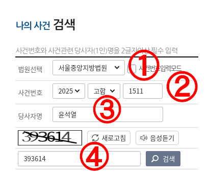
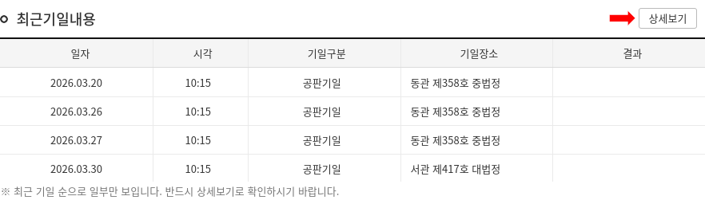
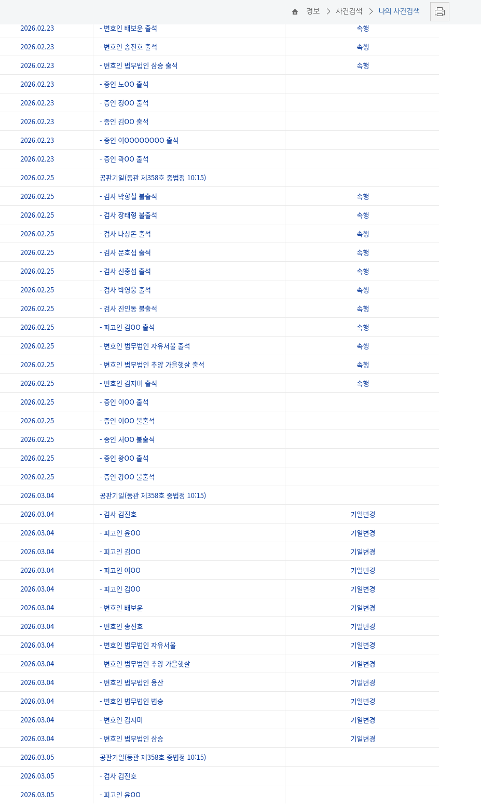

Step 1.
下記のソウル中央地方法院のウェブサイトにアクセスし、その下にある写真にあるような欄を探して下さい。
https://seoul.scourt.go.kr/main/new/Main.work

下記のソウル中央地方法院のウェブサイトにアクセスし、その下にある写真にあるような欄を探して下さい。
https://seoul.scourt.go.kr/main/new/Main.work
下記の例に従って入力を行って下さい。①〜②については主に選択肢より該当のものを選ぶことにより入力します。 ④についてはその上に表示される無作為な数字を入力して下さい。 ③にはハングルを入力しますが、ハングルの入力手段をお持ちでない方は下記をコピーして貼り付けて下さい。

虫眼鏡のアイコンをクリックすると画面が切り替わりますが、ここで重要なのは一見何も進んでいないように見える画面が表示されてもそのまま根気強く待つことです。数十秒後には裁判の概要についての画面に遷移します。
裁判の概要についての画面に移ったら、下記の写真にあるような項目を探し赤で印をつけたボタンを押します。

すると下記のような公判期日一覧の画面に遷移します。 2月25日の一覧には윤(尹)姓の被告人が存在せず、김(金)姓の被告人のみが記載されていることが分かるかと思います。 3月4日の公判は「기일변경」(期日変更)となり延期されたことも分かるかと思います。 (3月3日の公判期日はそもそも存在しません)
